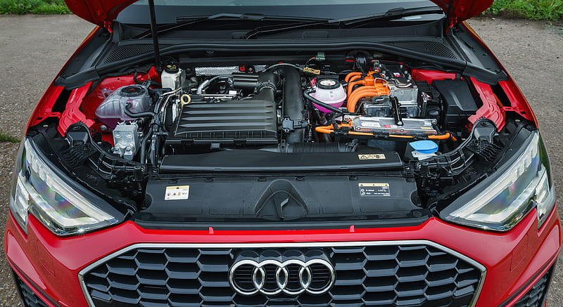
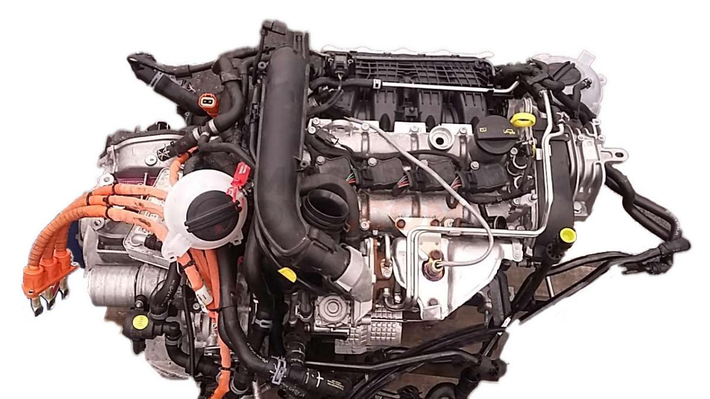
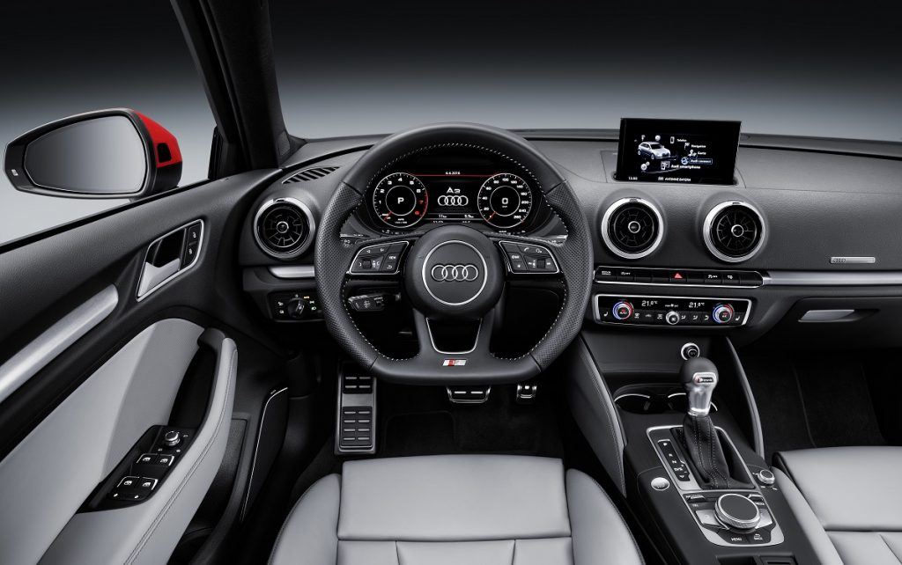

El Audi A3 es un coche compacto, perteneciente al segmento C, fabricado por Audi desde 1996 y
se trata de uno de los modelos más importantes de la marca alemana. Actualmente se comercializa
la cuarta generación, presentada en 2020 (más información del Audi A3 Sportback 2020), que renueva
su diseño interior y exterior, actualiza su gama de motores con nuevas opciones y añade importantes
novedades en infoentretenimiento y asistencias a la conducción. Su fabricación se realiza en diferentes
ubicaciones en todo el mundo dado que se trata de un coche diseñado de forma global, destancado las plantas
de Ingolstadt (Alemania) y Györ (Hungría) para su comercialización en Europa.
Los principales rivales del Audi A3 Sportback son el Mercedes Clase A y el BMW Serie 1, sin embargo
el A3 también cuenta con claras alternativas dentro del propio Grupo Volkswagen. Así, encontramos
otros rivales a tener en cuenta como son el SEAT León o el Volkswagen Golf, aunque también hay otras
opciones interesantes como el Mazda3, el Ford Focus o el Peugeot 308.
El diseño del Audi A3 Sportback es deportivo y agresivo en todas sus vistas. Basado en la plataforma
modular MQB, ya empleada por el A3 de tercera generación, el A3 Sportback evoluciona su receta con
mínimos cambios en tanto a sus medidas. De esta forma nos encontramos con una longitud de 4.343 mm
y una batalla de 2.636 mm, ofreciendo un volumen de maletero con 380 litros que pueden transformarse
en 1.200 litros al abatir los respaldos traseros en proporción 40:60.
Sus nuevas ópticas y pilotos de diseño afilado, que pueden ser Full-LED, junto a unos pasos de rueda más marcados
y tomas de aire más protagonistas hacen que el Audi A3 ofrezca un diseño deportivo, incluso en sus acabados más sencillos.
La equipación de los paquetes S Line o Black Line le confieren un toque extra de agresividad.

Como sucede en otros modelos del grupo como SEAT León o Volkswagen Golf, la oferta de propulsores del Audi A3 Sportback
ofrecerá alternativas diésel, gasolina, GNC o diferentes mecánicas híbridas. Sin embargo, por el momento el Audi A3 Sportback
comercializa: un 1.0 TFSI tricilíndrico de 110 CV, un 1.5 TFSI de 150 CV, un 2.0 TDI de 116 CV, un 2.0 TDI de 150 CV y una alternativa
microhíbrida: se trata del 35 TFSI MHEV, que cuenta con el motor 1.5 TFSI de 150 CV con un sistema de hibridación ligera, que le permite
reducir el consumo en 0,4 litros cada 100 kilómetros y obtener la tan ansiada etiqueta ECO de la DGT. Más adelante llegarán versiones
híbridas-enchufables, con tracción total y las versiones más deportivas (S3 y RS3 Sportback).

Todos los motores emplean una configuración de tracción delantera, aunque opcionalmente (esta opción llegará más adelante), los motores
más potentes pueden combinarse con un sistema de tracción total quattro. En el apartado de transmisiones existen dos únicas posibilidades:
un cambio manual de 6 relaciones o un cambio automático S Tronic de doble embrague y 7 relaciones.
El diseño interior del Audi A3 es sobrio, elegante y goza de un fuerte componente tecnológico. Se trata del punto donde más cambia la cuarta generación del A3 con respecto de sus antecesores, destacando el nuevo puesto de conducción donde se adivina un cockpit más centrado en el conductor, y en donde además encontramos un salpicadero de línes horizontales donde se ha buscado prescindir del grueso de los mandos para centrar la mayoría de funciones en la pantalla táctil central de 10,1 pulgadas. En el caso de el cuadro de instrumentos siempre es digital, con pantalla LCD de 10,25" en los acabados más sencillos y de 12,3" en las terminaciones más completas, estando además complementado - opcionalmente - por un Head-Up Display a color con proyección sobre el parabrisas.
